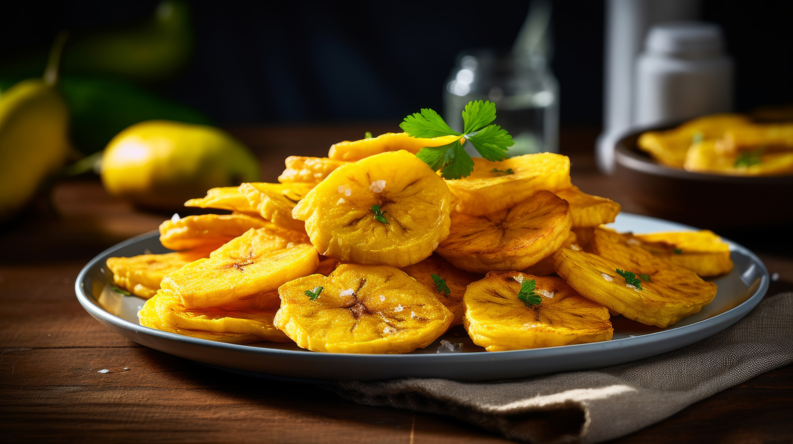

Tostones
Home

Dominican Twice-Fried Plantains. Tostones are typically served as a side dish and are a staple of many Latin American countries.
Ingredients
- 2 green plantain
- Vegetable oil
- Salt
Steps
- Peel the plantains.
- Discard the ends of the plantain and cut the rest into 1 inch thick slices.
- Fry the plantains. Heat the oil over medium heat in a pan. Fry the plantains till light golden.
- Flatten the plantains using a tostonera or the bottom of a plate/glass.
- Fry the plantains again until they are golden yellow on both sides.
- Sprinkle with salt to season and serve immediately.